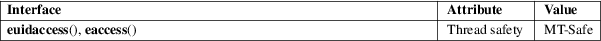

euidaccess, eaccess − check effective user’s permissions for a file
Standard C library (libc, −lc)
#define
_GNU_SOURCE /* See feature_test_macros(7) */
#include <unistd.h>
int
euidaccess(const char *pathname, int
mode);
int eaccess(const char *pathname, int
mode);
Like access(2), euidaccess() checks permissions and existence of the file identified by its argument pathname. However, whereas access(2) performs checks using the real user and group identifiers of the process, euidaccess() uses the effective identifiers.
mode is a mask consisting of one or more of R_OK, W_OK, X_OK, and F_OK, with the same meanings as for access(2).
eaccess() is a synonym for euidaccess(), provided for compatibility with some other systems.
On success (all requested permissions granted), zero is returned. On error (at least one bit in mode asked for a permission that is denied, or some other error occurred), −1 is returned, and errno is set to indicate the error.
As for access(2).
For an explanation of the terms used in this section, see attributes(7).

Some other systems have an eaccess() function.
None.
eaccess()
glibc 2.4.
Warning: Using this function to check a process’s permissions on a file before performing some operation based on that information leads to race conditions: the file permissions may change between the two steps. Generally, it is safer just to attempt the desired operation and handle any permission error that occurs.
This function always dereferences symbolic links. If you need to check the permissions on a symbolic link, use faccessat(2) with the flags AT_EACCESS and AT_SYMLINK_NOFOLLOW.
access(2), chmod(2), chown(2), faccessat(2), open(2), setgid(2), setuid(2), stat(2), credentials(7), path_resolution(7)